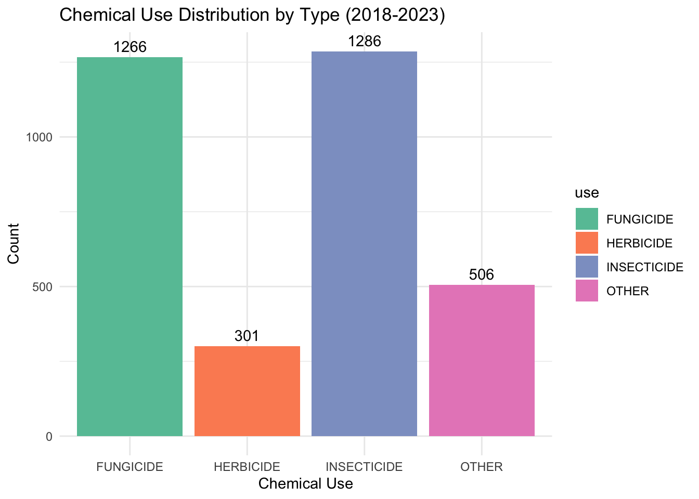
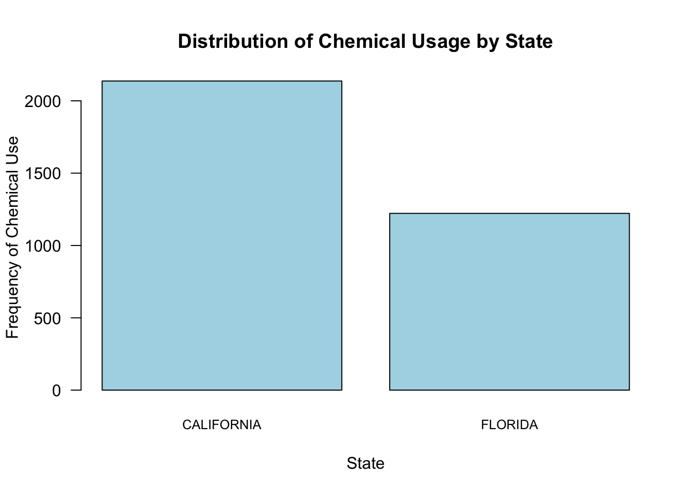
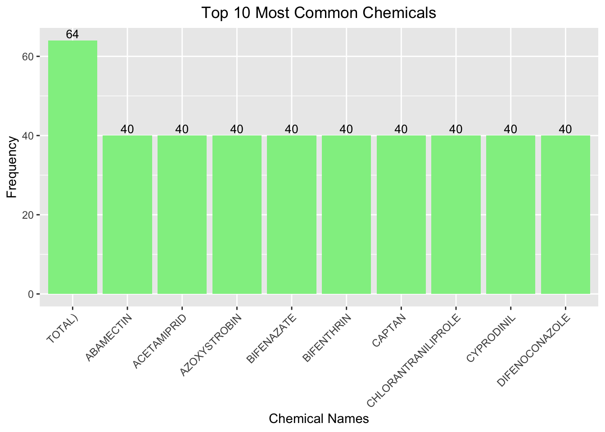
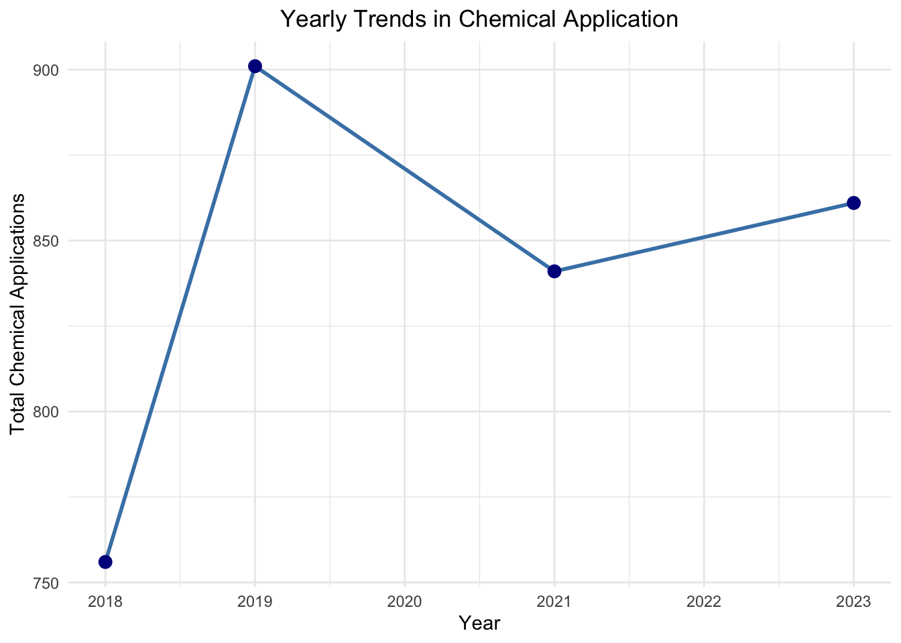

strawberry <- read_csv("strawberries25_v3.csv", col_names = TRUE, show_col_types = FALSE )
# glimpse(strawberry)MA615 Strawberries EDA
Introduction
This document performs an exploratory data analysis (EDA) on the strawberries dataset. We clean the dataset, split the chemical data, and visualize key trends, such as strawberry production and pesticide use.
By the end of this EDA Report, we will respond the following questions:
Strawberry EDA Questions
- Where they are grown? By whom?
- Are they really loaded with carcinogenic poisons?
- Are they really good for your health? Bad for your health?
- Are organic strawberries carriers of deadly diseases?
- When I go to the market should I buy conventional or organic strawberries?
- Do Strawberry farmers make money?
- How do the strawberries I buy get to my market?
1. Data Cleaning
We begin by loading the dataset and exploring its structure.
Ditch the counties
unique(strawberry$`Geo Level`)[1] "COUNTY" "NATIONAL" "STATE" strawberry <- strawberry |>
filter(`Geo Level`== "NATIONAL" | `Geo Level`== "STATE")Remove Single-Value Columns
We now define a function to drop columns with a single unique value across all rows, as they don’t add useful information to the analysis.
# Function to drop columns with a single unique value
drop_one_value_col <- function(df){
drop <- NULL
for(i in 1:dim(df)[2]){
if((df |> distinct(df[,i]) |> count()) == 1){
drop = c(drop, i)
}
}
## report the result -- names of columns dropped
## consider using the column content for labels
## or headers
if(is.null(drop)){return("none")}else{
print("Columns dropped:")
print(colnames(df)[drop])
strawberry <- df[, -1*drop]
}
}
# Apply the function to drop unnecessary columns
strawberry <- drop_one_value_col(strawberry)[1] "Columns dropped:"
[1] "Week Ending" "Ag District" "Ag District Code" "County"
[5] "County ANSI" "Zip Code" "Region" "watershed_code"
[9] "Watershed" "Commodity" 3. Explore Data Organization
At this point, we examine whether every row is associated with a specific state.
# Check if every row is associated with a state
state_all <- strawberry |> distinct(State)
state_all1 <- strawberry |> group_by(State) |> count()
if(sum(state_all1$n) == dim(strawberry)[1]){print("Yes, every row in the data is associated with a state.")}[1] "Yes, every row in the data is associated with a state."4. Data Cleaning
4.1 Explore California Data
To gain better insight into the data, we explore the entries for California and see the differences between CENSUS and SURVEY programs.
# Filter California data
calif <- strawberry |> filter(State == "CALIFORNIA")
# Split data by 'Program' (CENSUS and SURVEY)
calif_census <- calif |> filter(Program == "CENSUS")
calif_survey <- calif |> filter(Program == "SURVEY")
# Drop single-value columns in California data
drop_one_value_col(calif_census)[1] "Columns dropped:"
[1] "Program" "Period" "Geo Level" "State" "State ANSI"drop_one_value_col(calif_survey)[1] "Columns dropped:"
[1] "Program" "Geo Level" "State" "State ANSI" "CV (%)" 4.2 Split the Data Item Column
We now clean and split composite columns for better clarity. We start with the Data Item column, separating it into Fruit, Category, Item, and Metric.
# Split the 'Data Item' column into multiple columns
strawberry <- strawberry |>
separate_wider_delim(cols = `Data Item`,
delim = ",",
names = c("Fruit", "Category", "Item", "Metric"),
too_many = "error",
too_few = "align_start")
# Trim white spaces from the newly created columns
strawberry$Category <- str_trim(strawberry$Category, side = "both")
strawberry$Item <- str_trim(strawberry$Item, side = "both")
strawberry$Metric <- str_trim(strawberry$Metric, side = "both")4.4 Cleaning Area Grown Data
4.5 Cleaning (Splitting) Chemical Data
In this step, our goal is to extract the chemical name, use, and code from the Domain Category column where applicable. The format of interest is:
Example:
- Input:
"CHEMICAL, FUNGICIDE: (BACILLUS SUBTILIS = 6479)" - Output:
use="FUNGICIDE"name="BACILLUS SUBTILIS"code="6479"
After cleaning and organizing, this data should appear in three renamed columns as:
FUNGICIDE, BACILLUS SUBTILIS, 6479
# Step 1: Save the original Domain Category in another column
strawberry <- strawberry %>%
mutate(original_domain_category = `Domain Category`)
# Step 2: Filter for rows where the Domain Category contains CHEMICAL
chemical_data <- strawberry %>%
filter(str_detect(`Domain Category`, "CHEMICAL"))
# Step 3: Separate the Domain Category into 'type' and 'remaining'
chemical_data <- chemical_data %>%
separate(col = `Domain Category`, into = c("type", "remaining"),
sep = ", ", extra = "merge", fill = "right")
# Step 4: Further split the 'remaining' part into 'use' and 'chemical_info'
chemical_data <- chemical_data %>%
separate(col = remaining, into = c("use", "chemical_info"),
sep = ": ", extra = "merge", fill = "right")
# Step 5: Split the 'chemical_info' into 'name' and 'code'
chemical_data <- chemical_data %>%
separate(col = chemical_info, into = c("name", "code"),
sep = " = ", extra = "merge", fill = "right")
# Step 6: Clean up the 'chemical_name' and 'chemical_code' columns
chemical_data <- chemical_data %>%
mutate(
name = str_remove_all(name, "\\("), # Remove '(' before chemical name
code = str_replace_all(code, "\\(|\\)", ""), # Remove '(' ')' around chemical code
code = as.numeric(code) # Convert chemical code to numeric
)
# Step 7: Select relevant columns and bring back the original Domain Category
final_chemical_data <- chemical_data %>%
select(State, Year, original_domain_category, type, use, name, code, Value)
# Step 8: View the final cleaned chemical data
glimpse(final_chemical_data)Rows: 3,359
Columns: 8
$ State <chr> "CALIFORNIA", "CALIFORNIA", "CALIFORNIA", "CA…
$ Year <dbl> 2023, 2023, 2023, 2023, 2023, 2023, 2023, 202…
$ original_domain_category <chr> "CHEMICAL, FUNGICIDE: (OXATHIAPIPROLIN = 1281…
$ type <chr> "CHEMICAL", "CHEMICAL", "CHEMICAL", "CHEMICAL…
$ use <chr> "FUNGICIDE", "INSECTICIDE", "INSECTICIDE", "O…
$ name <chr> "OXATHIAPIPROLIN", "CYCLANILIPROLE", "PERMETH…
$ code <dbl> 128111, 26202, 109701, 115003, 128111, 26202,…
$ Value <chr> "(D)", "(D)", "(D)", "(NA)", "(D)", "(D)", "(…# Saving the cleaned chemical data for future analysis
write_csv(final_chemical_data, "cleaned_chemical_data.csv")6. Chemical Data Analysis
Following the data cleaning process, we will now focus on analyzing the chemicals used in strawberry farming. The cleaned dataset contains detailed information about various chemicals, their subtypes (fungicides, insecticides, herbicides, etc.), and the geographic and temporal application patterns. This report will dive into these data points to extract insights and identify trends in chemical usage
Objective
The primary goal of this analysis is to:
- Identify the most commonly used chemicals in strawberry production
- Analyze geographic patterns of chemical application across different states
- Understand the usage trends over time, with particular attention to chemicals flagged by the WHO as potential carcinogens
- Highlight specific chemicals of concern, particularly those that are widely used and have possible health implications
6.1 Data Overview
The chemical dataset, cleaned in earlier steps, includes the following relevant columns:
glimpse(final_chemical_data, 1)Rows: 3,359
Columns: 8
$ State <chr> …
$ Year <dbl> …
$ original_domain_category <chr> …
$ type <chr> …
$ use <chr> …
$ name <chr> …
$ code <dbl> …
$ Value <chr> …- State: The U.S. state where the chemical was applied.
- Year: The year of the recorded chemical application.
- Type: Indicates whether the chemical is an insecticide, herbicide, or fungicide, among other categories.
- Use: The specific subtype of the chemical (e.g., “Fungicide”).
- Name: The chemical’s active ingredient (e.g., “Glyphosate”).
- Code: A unique code associated with the chemical compound.
- Value: The quantity or extent of chemical application.
The following analysis focuses on examining this chemical data and identifying significant trends and concerns.
6.1.1 Overview of the Chemicals Data
We will first explore some general characteristics of the chemicals used in the strawberry data, focusing on key fields like use, name, and code.
# Summarize the types of chemicals and their occurrences
chemical_summary <- chemical_data %>%
group_by(type, use) %>%
summarize(count = n()) %>%
arrange(desc(count))`summarise()` has grouped output by 'type'. You can override using the
`.groups` argument.# View the summary
#chemical_summary
# Create a bar chart with count labels
ggplot(chemical_summary, aes(x = use, y = count, fill = use)) +
geom_bar(stat = "identity", position = position_dodge(width = 0.9)) +
geom_text(aes(label = count), position = position_dodge(width = 0.9), vjust = -0.5) +
theme_minimal() +
labs(title = "Chemical Use Distribution by Type (2018-2023)",
x = "Chemical Use",
y = "Count") +
scale_fill_brewer(palette = "Set2")
6.1.2 Chemical Usage in Different States
We can also examine the usage of different chemicals across various states. Analyzing chemical usage across different states allows us to understand regional variations in farming practices and the specific chemicals preferred in certain areas. Factors such as climate, soil type, local pest populations, and agricultural policies can all influence the choice of chemicals used by farmers. For instance, warmer states might rely more heavily on insecticides due to higher pest pressures, while cooler or wetter states might see more use of fungicides to combat fungal diseases. Understanding these regional differences is essential for developing targeted strategies that promote sustainable farming practices while addressing local agricultural challenges.
# Barplot of chemical use by state
bar_data <- table(chemical_data$State)
barplot(bar_data,
main = "Distribution of Chemical Usage by State",
xlab = "State",
ylab = "Frequency of Chemical Use",
las = 1, # Rotate the state names for better readability
col = "lightblue",
cex.names = 0.8)
Very interesting… I did not expect to see only two states in this graph. I was skeptical and wrote another function to confirm that this was correct, and it was indeed correct. This graph indicates that only 2 U.S. states uses chemicals for their strawberry farming with California’s usage being almost twice as much as Florida’s usage.
strawberry %>%
filter(str_detect(Domain, "CHEMICAL")) %>% # Filter rows containing the word "CHEMICAL"
distinct(State) %>% # Get distinct states
count() # A tibble: 1 × 1
n
<int>
1 26.1.3 Top 10 Most Common Chemicals Used
# Find the top 10 most common chemical names
top_chemicals_df <- as.data.frame(sort(table(chemical_data$name),
decreasing = TRUE)[1:10])
# Rename the columns for better readability
colnames(top_chemicals_df) <- c("Chemical", "Frequency")
# Create the bar plot using ggplot2
ggplot(top_chemicals_df, aes(x = reorder(Chemical, -Frequency), y = Frequency)) +
geom_bar(stat = "identity", fill = "lightgreen") +
geom_text(aes(label = Frequency), vjust = -0.3, size = 3.5) + # Adding text labels
labs(title = "Top 10 Most Common Chemicals",
x = "Chemical Names",
y = "Frequency") +
theme(axis.text.x = element_text(angle = 45, hjust = 1), # Rotate the labels
plot.title = element_text(hjust = 0.5)) # Center the title
This bar plot visualizes the top 10 most frequently used chemicals in the dataset, showing their relative occurrence. The TOTAL chemical is the most frequently used, appearing 64 times, while other chemicals such as ABAMECTIN, ACETAMIPRID, AZOXYSTROBIN, and BIFENAZATE occur less frequently, with 40 instances each.
Each chemical’s usage in this analysis suggests its importance or prevalence in strawberry production. The consistent frequency among these key chemicals, except for TOTAL, may indicate that certain pesticides or fungicides are favored across different farms and conditions, possibly due to their effectiveness or regulation.
6.1.4 Yearly Trends in Chemical Application
# Summarize the chemical application by year
chemical_trend <- chemical_data %>%
group_by(Year) %>%
summarize(total_chemicals = n()) %>%
arrange(Year)
# Plot the yearly trends in chemical application
ggplot(chemical_trend, aes(x = Year, y = total_chemicals)) +
geom_line(color = "steelblue", size = 1) +
geom_point(color = "darkblue", size = 3) +
labs(title = "Yearly Trends in Chemical Application",
x = "Year",
y = "Total Chemical Applications") +
theme_minimal() +
theme(plot.title = element_text(hjust = 0.5)) # Centering the titleWarning: Using `size` aesthetic for lines was deprecated in ggplot2 3.4.0.
ℹ Please use `linewidth` instead.
The line plot above visualizes the yearly trends in chemical applications in strawberry farming from 2018 to 2023. The data reveals a few key points:
2019 saw the highest number of chemical applications, with over 900 instances.
Following this peak, there was a significant drop in chemical applications by 2021, bringing the total down to just above 850.
Despite the decline, there was a slight increase in 2023, which may indicate a shift back towards higher usage of chemicals.
The observed dip in chemical applications from 2019 to 2021 could likely be attributed to the global disruptions caused by the COVID-19 pandemic. Supply chain issues, labor shortages, and financial constraints may have limited farmers’ access to chemical inputs during this time. Additionally, the pandemic brought increased awareness of sustainability and health, potentially driving a shift toward reduced chemical usage in favor of organic or eco-friendly farming practices. The subsequent recovery in chemical applications by 2023 might reflect the normalization of supply chains and agricultural operations as the world adjusted to post-pandemic conditions.
6.2 Are They Really Loaded with Carcinogenic Poisons?
A primary concern regarding strawberry production is the use of carcinogenic pesticides. We can identify whether strawberries are exposed to chemicals flagged by the WHO as carcinogenic (e.g., glyphosate, diazinon, malathion).
6.3 Are They Really Good for Your Health? Bad for Your Health?
Strawberries are generally known for their high vitamin C content and other nutrients. However, concerns arise regarding pesticide residues on non-organic strawberries. Here, we compare organic vs. conventional farming practices in relation to chemical use.
6.4 Are Organic Strawberries Carriers of Deadly Diseases?
There is often skepticism about the safety of organic produce due to the lack of synthetic pesticides. We can analyze if there are any reports or patterns of disease outbreaks tied to organic strawberry farming.
7. Strawberry Data Analysis
This section aims to respond to key questions about strawberry farming, production, chemical use, and consumer choices. The analysis leverages data from the USDA to explore how and where strawberries are grown, the chemicals involved in production, and whether organic farming practices differ significantly from conventional methods.
7.1 Data Overview
Data overview here
7.2 Where Are Strawberries Grown? By Whom?
To begin, we need to identify the primary states and farms involved in strawberry production across the U.S. Understanding the geography of strawberry production can reveal key farming regions and production hubs.
7.3 Should You Buy Conventional or Organic Strawberries?
Given the difference in chemical use between conventional and organic strawberries, consumers must weigh the health benefits of organic produce against the higher costs typically associated with organic farming.
7.4 Do Strawberry Farmers Make Money?
Strawberry farming can be profitable, but it also depends on market prices, yield, and operational costs. We will analyze the total sales data to understand the economic impact of strawberry farming.
7.5 How Do Strawberries Reach the Market?
Understanding the supply chain is important for assessing the environmental impact of strawberry farming. While our dataset does not explicitly track the supply chain, we can infer transportation and distribution trends based on production regions.
Conclusion
The exploratory analysis of the strawberry dataset reveals important insights into the use of chemicals in strawberry farming across the United States. By carefully cleaning and structuring the data, we were able to examine trends in chemical applications across different states and over time.
Our findings indicate that California is the predominant user of chemicals in strawberry farming, with Florida being the only other state with significant chemical usage. This dominance by two states raises questions about regional farming practices and their reliance on chemical inputs.
The analysis of the yearly trends in chemical application revealed a peak in chemical usage in 2019, followed by a decline in 2021, likely influenced by the COVID-19 pandemic. The decrease may have been caused by disruptions in supply chains, labor shortages, or a shift in farming practices during the pandemic. By 2023, chemical usage began to rise again, suggesting a recovery in agricultural operations.
This analysis underscores the importance of monitoring chemical usage in agriculture, particularly given the potential health and environmental impacts. Future studies could explore the effectiveness and safety of the most commonly used chemicals, as well as the potential for transitioning to more sustainable farming practices.